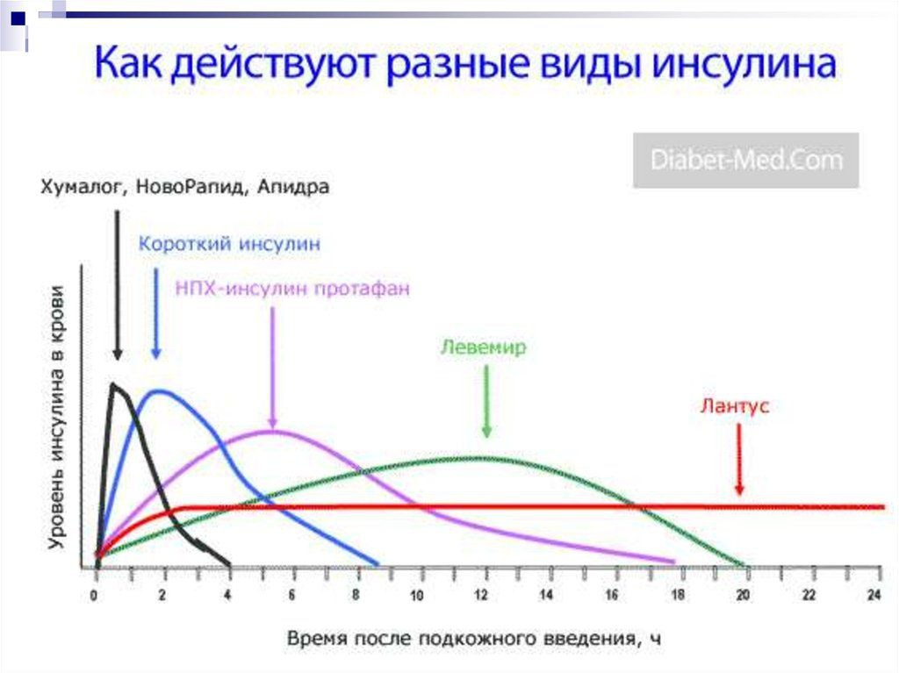

Инсулин


Что такое инсулин
Мы не можем жить без инсулина.Это гормон, который помогает телу управлять уровнем глюкозы.
Синтезированный искусственно инсулин является лекарством для людей с диабетом, у которых своего инсулина недостаточно или он не вырабатывается.Как работает инсулин?
Инсулин, как ключ, помогает открывать клетки организма и позволяет глюкозе перемещаться в клетки и использоваться в качестве энергии. Без инсулина глюкоза не может попасть в клетки и дать энергию. Мы получаем глюкозу из пищи или из напитков. Когда есть диабет, слишком много глюкозы находится в крови, так как глюкоза не может быть использована клетками в качестве топлива. Постоянно высокий уровень глюкозы в крови отрицательно влияет на сосуды, внутренние органы и в долгосрочной перспективе влияет на продолжительность жизни и ее качество.
Хранение инсулина
Хорошо известно, что инсулин – гормон белковой природы. Для того, чтобы инсулин работал эффективно, он не должен подвергаться воздействию экстремально низких или высоких температур, а также подвергаться резкому перепаду температур. Если это происходит, инсулин становится неактивным, а следовательно бесполезным для применения.
Инсулин хорошо переносит комнатную температуру. Большинство производителей рекомендуют хранить инсулин при комнатной температуре (не выше 25-30°) не более 4 недель. При комнатной температуре инсулин потеряет меньше 1% своей силы за месяц. Рекомендуемая продолжительность времени хранения инсулина больше основана на заботе о его стерильности, чем о силе действия. Производители рекомендуют отмечать на этикетке дату первого забора на препарате. Необходимо ознакомиться с инструкцией из упаковки инсулина того типа, который используется, и обратить внимание на срок годности на флаконе или картридже. Общепринятой практикой является хранение запасов инсулина в холодильнике (4-8°), а тот флакон или картридж, который используется в настоящий момент – при комнатной температуре.
Нельзя класть инсулин рядом с морозильной камерой, так как он не переносит температуру ниже +2° Хранить запасы закрытого инсулина в холодильнике можно до окончания срока годности препарата. Срок годности закрытого инсулина составляет 30-36 месяцев. Всегда начинайте с более старой (но не просроченной!) упаковки инсулина из ваших запасов. Перед началом использования нового картриджа/флакона с инсулином необходимо согреть его до комнатной температуры. Для этого достаньте его из холодильника за 2-3 часа перед инъекцией инсулина. Инъекции охлажденного инсулина могут быть болезненными. Не подвергайте инсулин воздействию яркого света и воздействию высоких температур, таких как солнечный свет в автомобиле или жара в сауне – инсулин снижает свой эффект при температуре выше 25°. При 35° он инактивируется в 4 раза быстрее, чем при комнатной температуре. Если вы находитесь в условиях, где температура воздуха выше 25°, держать инсулин следует в специальных охлажденных чехлах, контейнерах или кейсах. Сегодня в продаже есть различные приспособления для того, чтобы перевозить и хранить инсулин. Есть специальные электрические охладители, которые работают от заряжаемых батареек. Также существуют термо-чехлы и термо-сумки для хранения инсулина, которые содержат специальные кристаллы, превращающиеся в гель при соприкосновении с водой. Один раз поместив такой термо-прибор в воду, можно использовать его в качестве охладителя инсулина в течение 3-4 дней. После этого срока для лучшего эффекта нужно будет вновь поместить его в холодную воду. В зимние месяцы перевозить инсулин лучше, положив его ближе к телу, а не в сумке. Нет необходимости держать инсулин в полной темноте. Никогда не используйте инсулин средней или длительной продолжительности действия, если он содержит хлопья внутри. А также инсулин короткого действия (регуляр), если он стал мутным. Выявление пришедшего в негодность инсулина Есть только 2 принципиальных способа понять, что инсулин прекратил свое действие: Отсутствие эффекта от введения инсулина (нет снижения уровня глюкозы крови); Изменение внешнего вида раствора инсулина в картридже/флаконе.
Если у вас сохраняется высокий уровень глюкозы крови после инъекций инсулина (а вы исключили влияние других факторов), ваш инсулин, возможно, потерял свою эффективность. Если внешний вид инсулина в картридже/флаконе изменился, вероятно, он уже не будет действовать. Среди отличительных признаков, указывающих на негодность инсулина, можно выделить следующие: Раствор инсулина мутный, хотя должен быть прозрачным; Суспензия инсулина после перемешивания должна быть равномерной, но остаются глыбки и комки; Раствор выглядит тягучим; Изменился цвет раствора/суспензии инсулина. Если вам кажется, что с вашим инсулином что-то не то – не нужно испытывать судьбу. Просто возьмите новый флакон/картридж.
Рекомендации по хранению инсулина в катридже/шприц-ручке,флаконе
Ознакомьтесь с рекомендациями по условиям и срокам хранения у производителя данного инсулина. Инструкция находится внутри упаковки; Защищайте инсулин от воздействия экстремальных температур (холод/жара); Избегайте прямого попадания солнечных лучей (например, хранение на подоконнике); Не держите инсулин в морозильной камере. Будучи замороженным, он теряет свои свойства и должен быть утилизирован; Не оставляйте инсулин в машине при высокой/низкой температуре воздуха; При высокой/низкой температуре воздуха хранить/транспортировать инсулин лучше в специальном термочехле.Рекомендации по использованию инсулина в катридже,флаконе,шприц-ручке
Всегда проверяйте дату изготовления и срок годности на упаковке и картриджах/флаконах; Никогда не используйте инсулин, если его срок годности истек; Внимательно осматривайте инсулин перед применением. Если раствор содержит глыбки или хлопья, такой инсулин нельзя использовать. Раствор инсулина прозрачный и бесцветный никогда не должен быть мутным, образовывать осадок или комочки; Если вы используете суспензию инсулина (НПХ-инсулин или смешанный инсулин) – непосредственно перед инъекцией необходимо аккуратно перемешать содержимое флакона/картриджа до получение равномерной окраски суспензии; Если вы набрали в шприц большее количество инсулина, чем требуется – не нужно пытаться остаток инсулина влить обратно во флакон, это может привезти к контаминации (загрязнению) всего раствора инсулина во флаконе.Рекомендации по использованию инсулина на отдыхе
Возьмите с собой в поездку минимум двойной запас инсулина, рассчитанный на необходимое вам количество дней. Лучше разложить его по разным местам ручной клади (если часть багажа потеряется, то вторая часть останется невредимой); Путешествуя на самолете, всегда берите весь инсулин с собой, в ручную кладь. Сдав его в багажное отделение, вы рискуете заморозить его из-за экстремально низкой температуры в багажном отсеке во время полета. Замороженный инсулин использовать нельзя; Не подвергайте инсулин воздействию высоких температур, оставляя его в машине летом или на пляже; Необходимо всегда хранить инсулин в прохладном месте, где температура остается стабильной, без резких колебаний. Для этого существует большое количество специальных (охлаждающих) чехлов, контейнеров и кейсов, в которых инсулин может хранится в подходящих условиях: Открытый инсулин, который вы используете в данный момент, должен всегда находиться при температуре от 4°C до 24°C, не более 28 дней; Запасы инсулина должны храниться при температуре около 4°C, но не рядом с морозильной камерой.Инсулин нельзя использовать если:
Изменился внешний вид раствора инсулина (стал мутным, или появились хлопья или осадок); Истек срок годности, указанный производителем на упаковке; Инсулин был подвергнут действию экстремальных температур (заморозка/жара); Несмотря на перемешивание, внутри флакона/картриджа с суспензией инсулина остается белый осадок или комки.Соблюдение этих несложных правил поможет вам сохранить инсулин эффективным в течение всего срока его годности и избежать введения в организм негодного препарата.
Инсулин: мифы и реальность
При сахарном диабете 1 типа введение инсулина является главным методом контроля гипогликемии, а людям с СД 2-го типа ее назначают, когда компенсация заболевания с помощью диеты, рекомендованных физических нагрузок, лекарственной терапии становится затруднительной или невозможной. Многие пациенты боятся начинать использовать инсулин, руководствуясь неверными представлениями о его действии и свойствах. Этот материал — попытка разобраться с основными мифами об инсулинотерапии.
Мне назначили инсулин, значит мой диабет очень тяжелый
Не верно. Инсулин назначается, когда клетки поджелудочной железы не вырабатывают достаточно инсулина или не вырабатывают его вовсе.Тяжесть диабета зависит не от факта введения инсулина, а от наличия последствий диабета, уровня глюкозы, гликированного гемоглобина, данных мониторинга глюкозы.Инсулин вреден для организма
Это не так. Вреда организму инсулин при сахарном диабете не наносит. Он, наоборот, компенсирует нехватку этого важного гормона, поддерживает обмен веществ, нормализует уровень сахара в крови. Например, в состоянии беременности тоже изменяется углеводный обмен, к сожалению, не редко возникает гестационный диабет (диабет беременных) и единственный метод лечения, когда диета и образ жизни не дает нужных показателей глюкозы, введение инсулина и для плода инсулин является безопасным и не несет рисков. Важно соблюдать правила хранения, проведения инъекций и не использовать инсулин, если истек срок годности.Инсулин опасен и вызывает осложнения
Осложнения при сахарном диабете возникают из-за скачков уровня глюкозы в крови, а инсулин как раз помогает удерживать уровень сахара в крови в рамках целевых значений, не допускать его падения или чрезмерного повышения. Лечение необходимо, чтобы высокий уровень сахара в крови не вызывал осложнений: нарушений функции почек, глаз, сосудов, «диабетической стопы», осложнений сердечно-сосудистых заболеваний.Уколы инсулина это больно
Бояться делать инъекции -это нормально.Страх перед уколами испытывают многие, поэтому сегодня для инъекций рекомендуют использовать шприц-ручки,специальные инсулиновые шприцы.. Иглы у них очень тонкие, их длина такая, что дальше подкожной клетчатки (куда и должен попасть инсулин во время укола) препарат не пойдет. Благодаря этому инъекции инсулина безболезненны, страх перед уколами со временем проходит.Можно посоветоваться с врачом и узнать о возможности поставить инсулиновую помпу. Она самостоятельно подает инсулин через катетер, который устанавливается под кожу на длительный срок.А вдруг случится гипогликемия?
Главная цель инсулинотерапии – оптимальный контроль гликемии. Это достигается двумя путями:Нормализация образа жизни – питание, двигательная активность, режим дня.
Подбор врачом схемы введения лекарственных препаратов, в том числе инсулина. Она индивидуальна для каждого пациента, учитывает особенности организма, течение диабета, возраст, характер питания, привычки, другие данные
Для самостоятельного управления заболеванием необходимо научиться самоконтролю уровня глюкозы в крови, проведению инъекций инсулина, а также правилам коррекции доз инсулин для достижения индивидуальных целевых показателей.
В «Школе диабета» также учат узнавать признаки гипогликемии, что можно сделать, чтобы ее не допустить. Регулярные измерения глюкометром показателей уровня сахара в крови позволяют вовремя заметить снижение уровня гликемии и принять рекомендованные врачом меры.
Уколы – это сложно
Если вы используете шприц-ручку, то ампула с инсулином уже вставлена в нее, инъекция занимает не больше минуты, это позволяет сохранить высокое качество жизни пациентов, использующих инсулинотерапию. На специальных шприцах указаны и миллилитры, и единицы инсулина, а сам препарат упакован в небольшой флакон.Я буду вынужден колоть инсулин на виду у всех
В большинстве случаев в день приходится делать от 1 до 4 уколов инсулина. Если время, когда нужно сделать укол, совпало с выходом «в свет», то можно выбрать комфортное для себя место, и сделать инъекцию там, не привлекая лишнего внимания.Если такой вопрос возникает у ребенка с диабетом ,то в школе можно договориться с медсестрой и делать инъекции у нее в кабинете.
На моем теле будут точки от проколов, синяки
Правильная техника введения может снизить вероятность появления следов от уколов. Иглы для введения инсулина очень тонкие, острые, с гладкой поверхностью. Они практически не травмируют кожу, если делать укол по инструкции к шприц-ручке или шприцу.
Выбирайте для укола место, где подкожный слой толстый (живот, ягодицы). После укола лучше не вынимать иглу сразу и резко, а задержать ее на 10 секунд и извлекать спокойно.Важно чередовать места инъекций.
Кто колет инсулин, тот может не соблюдать диету!
При любом типе сахарного диабета важно поддерживать постоянный и приемлемый уровень глюкозы в крови с помощью диеты и физической активности. Если есть все подряд, то сахар в крови будет «скакать», провоцировать то гипер-, то гипогликемию. Соблюдение назначений, в том числе диеты и инсулинотерапии, позволяет эффективно управлять диабетом и сохранить высокое качество жизни.Что делать, если перепутал инсулины!
Видов инсулина существует много.Они назначаются лечащим врачом.
Важно понимать основные механизмы действия ,а точнее скорость действия и продолжительность действия.
Есть “длинные” и “короткие” инсулины.
Короткие и аналоги коротких инсулинов вводяться перед едой, с целью помочь усвоиться глюкозе,которая попала с пищей. Длинные инсулины и аналоги инсулина длительного действия поддерживают стабильный уровень глюкозы длительно,когда короткие не работают. Инсулины короткого действия (Актрапид,Хумулин Регуляр,Генинсулин,Инсуман Рапид)начинают действовать через 30 минут до еды, действуют до 6-7 часов.
Аналоги инсулина короткого действия (Апидра, Новорапид, ЛизПро, Хумалог) действуют еще быстрее - через 15-20 минут после проведенной инъекции,действуют до 4 часов.
Данные инсулины используются для помповой терапии. Инсулины средней продолжительности действия (Протофан,Хумулин НПХ) начало действия через 1.5-2 часа,продолжительность действия 12 часов.
Аналоги инсулина длительного действия (Гларгин(Лантус), Детемир(Левемир), Деглудек(Тресиба) начинают действовать через час и действуют 24 часа. В первое время после назначения базис-болюсной инсулинотерапии важно сразу четко запомнить какой у вас инсулин «длинный», а какой «короткий», чтобы не перепутать. Ведь у этих препаратов инсулина совершенно разные цели. Если вы ввели "короткий" инсулин вместо "длинного", главное – предотвратить падение сахара крови. Для этого необходимо съесть медленно усваиваемые углеводы в соответствии с введенной дозой инсулина «короткого» действия и вашим углеводным коэффициентом (сколько вы обычно вводите инсулина на 1 ХЕ). Например, Вы случайно вместо 10 ЕД «длинного» укололи 10 ЕД «короткого» - в таком случае нужно поесть на 5-10 ХЕ преимущественно медленно усваиваемых углеводов (хлеб, картофель, макароны, крупы, фрукты). Затем измерить уровень глюкозы крови через 3-4 часа и в случае снижения глюкозы крови ниже 3,9 ммоль/л, дополнительно принять 1-2 ХЕ «быстрых углеводов – сахар, фруктовый сок, мед, варенье. Пропускать инъекцию «длинного» инсулина не нужно. Если возникла обратная ситуация, и вы по ошибке ввели «длинный» инсулин вместо «короткого» перед едой, вы отметите повышение сахара крови после приема пищи и возможно тенденцию с низким значениям гликемии в течение последующих 24 часов (продолжительность такой тенденции зависит от конкретного препарата и дозы). В таком случае достаточно ввести коррекционный болюс «короткого» инсулина при повышении сахара крови. В последующие сутки необходимо измерять глюкозу крови каждые 1-2 часа, и при снижении сахара крови до 3,9 ммоль/л и ниже съедать 1-2 ХЕ медленноусваиваемых углеводов. Плановую инъекцию «длинного» инсулина в этот день стоит пропустить и возобновить только со следующего дня.
Информация, представленная в материале, не является медицинской консультацией и не может заменить визит к врачу.* Источник

